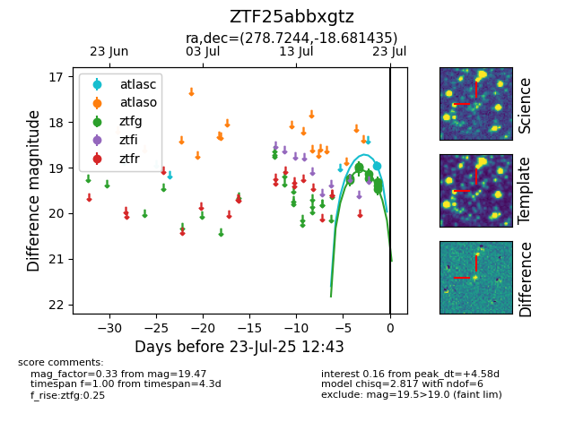

Target ZTF25abbxgtz at 2025-07-23 12:43, see:
FINK: fink-portal.org/ZTF25abbxgtz
Lasair: lasair-ztf.lsst.ac.uk/objects/ZTF25abbxgtz
ALeRCE: alerce.online/object/ZTF25abbxgtz
alt names
ZTF25abbxgtz (ztf,fink)
coordinates:
equatorial (ra, dec) = (278.7244,-18.68144)
galactic (l, b) = (14.4279,-4.89099)
photometry
last atlasc=18.96, ztfg=19.47
1 atlasc, 9 ztfg detections
